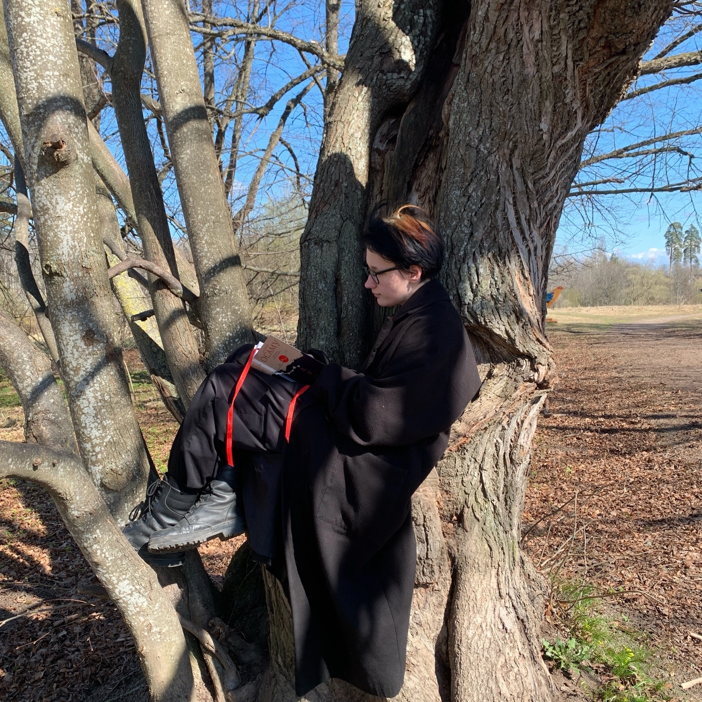

С нуля
Правила, ходы фигур, первые партии. Для тех, кто никогда не играл.
Индивидуальные занятия для детей и взрослых. Онлайн и офлайн. Разбор партий, тактика, дебюты — и главное, умение думать за доской.
Первое занятие — знакомство и диагностика уровня. Без обязательств.

Меня зовут Иван Иванов. Играю в сёги более 10 лет, преподаю — 5 лет. Участник и призёр региональных турниров, судья соревнований.
Моя философия проста: я учу не заучивать дебюты, а понимать логику позиции. Сёги — это не про память, а про мышление. Поэтому на занятиях мы много разбираем реальные партии и учимся принимать решения самостоятельно.

Правила, ходы фигур, первые партии. Для тех, кто никогда не играл.
Тактика, типовые приёмы, разбор своих партий. Для тех, кто уже играет.
Основные дебюты, планы в позиции, игра против компьютера.
Разбор соперников, турнирный режим, психология за доской.
Ниже — примерная сетка. Точное время подтверждаем после заявки.
«Сын занимается полгода. Раньше не мог усидеть на месте, теперь сам садится за доску. Иван объясняет спокойно и понятно.»
«Взрослому начинать было страшно, но на первом занятии всё разложили по полочкам. Через 3 месяца сыграл первый турнир.»
«Больше всего нравится разбор партий. Не просто “так нельзя”, а почему и как надо было думать.»
Для онлайн-занятий достаточно компьютера или телефона — доску показываю на экране. Для офлайн-занятий доска есть на месте, но можно приносить свою.
Обычно с 6–7 лет, когда ребёнок уверенно знает цифры и может удерживать внимание. Взрослым — в любом возрасте.
Zoom или Telegram с демонстрацией экрана. Разбираем позиции, играем, сразу обсуждаем. Запись занятия остаётся у вас.
Предупредите минимум за 12 часов — перенесём без потери оплаты. Без предупреждения занятие считается проведённым.
Стоимость зависит от формата (индивидуально / мини-группа) и обсуждается на пробном занятии. Пробное — бесплатное.
Заполните форму — заявка сразу попадёт в мой календарь, и я свяжусь с вами для подтверждения.
Или запишитесь через ВКонтакте:
Написать боту в ВКОфлайн-занятия — по адресу: г. Город, ул. Улица, д. 1 (по договорённости).